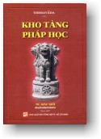

| |
|
 |
THERAVĀDA
PHẬT GIÁO NGUYÊN THỦY
KHO TÀNG PHÁP HỌC
Tỳ Khưu Giác Giới
biên soạn
|
|
Lưu ý:
Ðọc với phông chữ VU Times
(Viet-Pali Unicode) |
MỤC LỤC TRA CỨU
(Xếp theo đề pháp tiếng
Việt)
|
CHƯƠNG PHÁP MỘT CHI |
|
Một pháp đa tác
dụng
Một pháp cần tu tập
Một pháp cần biến tri
Một pháp cần được đoạn trừ
Một pháp thuộc phần hạ liệt
Một pháp thuộc phần thù thắng
Một pháp khó thể nhập
Một pháp cần sanh khởi
Một pháp cần thắng tri
Một pháp cần tác chứng |
1
2
3
4
5
6
7
8
9
10 |
|
CHƯƠNG PHÁP HAI CHI |
|
Hai pháp đa tác
dụng
Hai pháp cần tu tập
Hai pháp cần biến tri
Hai pháp cần được đoạn trừ
Hai pháp thuộc phần hạ liệt
Hai pháp thuộc phần thù thắng
Hai pháp khó thể nhập
Hai pháp cần sanh khởi
Hai pháp cần thắng tri
Hai pháp cần tác chứng
Hai nhân hổn loạn chánh pháp
Hai nhân chánh pháp vững trú
Hai loại tâm giải thoát
Hai loại dục
Hai loại trí tương ưng tâm thiện dục giới
Hai cực đoan
Hai hạng A-la-hán
Hai hạng Thánh nhân
Hai sự toại nguyện
Hai ý thức tính cực của Bồ tát
Hai loại nghiệp
Hai loại tà kiến
Hai pháp thực tính
Hai loại thiền
Hai loại thiền hiệp thế
Hai trạng thái níp-bàn
Hai pháp chế định
Hai loại sắc pháp
Hai sự thật
Hai bản chất
Hai loại định
Hai loại giáo lý
Hai loại cảm thọ
Hai sự khổ
Hai sự an lạc
Hai phận sự trong giáo pháp
Hai sự tiếp đãi
Hai sự bố thí
Hai sự sung mãn
Hai pháp nhiếp
Hai duyên sanh chánh kiến và tà kiến
Hai sự thanh tịnh
Hai pháp làm xinh đẹp
Hai hạng người khó kiếm
Hai cách thuyết giảng
Hai sự tinh cần
Hai sự tầm cầu
Hai loại kinh điển
Hai sự cúng dường
Hai ân Đức Phật
Hai pháp tu tiến
Hai pháp hộ trì thế gian
Hai bạch pháp, pháp trắng
Hai sự giải thoát
Hai duyên hợp để thọ ký thinh văn |
11
12
13
14
15
16
17
18
19
20
21
22
23
24, 25
26
27
28
29
30
31
32
33
34, 35, 36, 37
38
39
40
41
42, 43
44
(19)
45
46
47
48
49, 50
51
52
53, 54
55
56
57
58
59
60
61, 62
63
64
65
66
67
68
69
69
70
71 |
|
CHƯƠNG PHÁP BA CHI |
|
Ba pháp đa tác dụng
Ba pháp cần tu tập
Ba pháp cần biến tri
Ba pháp cần được đoạn trừ
Ba pháp thuộc phần hạ liệt
Ba pháp thuộc phần thù thắng
Ba pháp khó thể nhập
Ba pháp cần sanh khởi
Ba pháp cần thắng tri
Ba pháp cần tác chứng
Ba thiện căn
Ba bất thiện căn
Ba thiện tầm
Ba bất thiện tầm
Ba hữu vi tướng
Ba vô vi tướng
Ba tướng phổ thông
Ba hành
Ba giới hay bản chất
Ba hữu
Ba loại định
Ba cảm thọ
Ba sự giải thoát
Ba sự thành tựu
Ba thiện hạnh
Ba ác hạnh
Ba pháp tiến hoá
Ba pháp tăng trưởng tuệ
Ba thứ lửa
Ba sự lợi ích
Ba chuẩn mực
Ba pháp vô thượng
Ba pháp hành bất vạy
Ba thắng hành
Ba ái
Ba lậu hoặc
Ba nghiệp
Ba thiện xảo
Ba loại trí
Ba loại tuệ
Ba minh
Ba chủ thuyết ngoại giáo
Ba tri kiến
Ba trạng thái khổ
Ba tạng kinh điển Phật giáo
Ba y chỉ, ba chỗ nương
Ba ngôi báu, tam bảo
Ba đạt tri
Ba sự tu tiến
Ba học pháp, tam học
Ba diệu pháp, tinh hoa chánh pháp
Ba loại pháp thực tính
Ba pháp cố định, ba định luật
Ba ấn chứng thiền
Ba sự đoạn trừ
Ba pháp nghiệt chướng
Ba bậc dự lưu
Ba ân Đức Phật
Ba Phật hạnh
Ba cách thuyết pháp của Đức Phật
Ba huấn từ của chư Phật
Ba cửa tạo nghiệp
Ba loại thần thông
Ba luân trong duyên sinh
Ba pháp chướng ngại
Ba thế giới
Ba thế giới hữu tình
Ba thế giới không gian
Ba xuất ly giới
Ba ước lệ bậc chân nhân
Ba sự tri túc
Ba thiên sứ
Ba hạng chư thiên
Ba hạng con
Ba phước nghiệp sự
Ba sự phân phối tài sản hợp lý
Ba pháp thương nhân
Ba sự kiêng tránh
Ba sự viễn ly
Ba lý do để nhiệt tâm
Ba yếu tố thiết thực để tạo phước thí
Ba dấu hiệu người ngu
Ba dấu hiệu người trí
Ba sự kiện biết người có lóng tin
Ba danh hiệu gọi cha mẹ
Ba sự kiêu mạn
Ba loại tịnh chỉ
Ba cảnh cận tử
Ba sự tầm cầu
Ba gánh nặng
Ba loại dục
Ba nghiệp uy lực
Ba sự kiện khuất lấp
Ba đức tính người bạn đáng thân cận
Ba hành lộ
Ba hạnh viễn ly trong pháp luật |
72
73
74
75
76
77
78
79
80
81
(77)
(76)
82
83
84
85
86
87, 88
(80)
89
(73), 90, 91
(74)
92
93, 94
95
96
(72)
(72)
97, 98
99, 100
101
102
103
104
(75)
105
106
107
(79), 108
109
(81)
110
111
112
113
114
115
116
117
118
119
120
121
122
123
124
125
126
127
128
129
130
131
132
133
134
135
136
(78)
137
138
139
140
141
142
143
144
145
146
147
148
149
150
151
152
153
154
155
156
157
158
159
160
161
162
163 |
|
CHƯƠNG PHÁP BỐN CHI |
|
Bốn pháp đa tác
dụng
Bốn pháp cần tu tập
Bốn pháp cần biến tri
Bốn pháp cần được đoạn trừ
Bốn pháp thuộc phần hạ liệt
Bốn pháp thuộc phần thù thắng
Bốn pháp khó thể nhập
Bốn pháp cần sanh khởi
Bốn pháp cần thắng tri
Bốn pháp cần tác chứng
Bốn loại pháp hành
Bốn thánh đế, tứ diệu đế
Bốn phận sự trong tứ đế
Bốn thứ đạo quả
Bốn Sa-môn quả
Bốn bậc thiền sắc giới
Bốn bậc thiền vô sắc
Bốn địa vức
Bốn cõi
Bốn sanh loại
Bốn pháp siêu lý
Bốn nguyên tố vật chất
Bốn nghiệp xứ giới
Bốn đại cứ pháp
Bốn điểm tựa trong việc tu tập
Bốn truyền thống bậc thánh
Bốn loại vật thực, tứ thực
Bốn món vật dụng
Bốn loại tháp thờ
Bốn chỗ động tâm
Bốn cách cung kính
Bốn lý do kính lễ
Bốn giai cấp xã hội
Bốn vô sở úy
Bốn pháp dẫn đến lợi ích hiện tại
Bốn pháp dẫn đến lợi ích tương lai
Bốn ngõ suy sụp
Bốn sự bại hoại
Bốn sự thành tựu
Bốn khuyết điểm
Bốn lợi điểm
Bốn nỗi sợ hãi
Bốn tranh sự
Bốn điều bất khả tư nghì
Bốn điều phật không cần giữ gìn
Bốn cách thuyết pháp của Đức Phật
Bốn tánh hạnh của vị Chuyển Luân Vương
Bốn nhiếp pháp của vị vua
Bốn nhiếp pháp
Bốn pháp tiến hóa
Bốn pháp tăng ích
Bốn phạm trú, tứ vô lượng tâm
Bốn sự tu tập
Bốn sự thọ trì pháp
Bốn sự hành đạo
Bốn sự tu tiến định
Bốn loại định
Bốn như ý túc
Bốn tuệ đạt thông, tứ tuệ phân tích
Bốn loại trí
Bốn sự tinh cần, tứ chánh cần
Bốn niệm xứ, tứ niệm xứ
Bốn sự tỉnh giác
Bốn thanh tịnh giới
Bốn sức mạnh
Bốn loại niềm tin
Bốn niềm tin tối thượng
Bốn phương diện lượng xét
Bốn hiện tượng
Bốn pháp trợ tu
Bốn sự cúng dường thanh tịnh
Bốn pháp bất thối của vị tỳ-kheo
Bốn tư niệm
Bốn nhân sanh tương ưng trí
Bốn pháp xác định
Bốn loại nghiệp quả
Bốn quả báo thiện hành
Bốn quả báo ác hành
Bốn pháp người tại gia
Bốn gia thịnh pháp
Bốn điều an lạc của cư sĩ
Bốn sự thiên vị
Bốn nghiệp phiền não
Bốn sự vô minh
Bốn pháp thủ
Bốn lậu hoặc
Bốn bộc lưu
Bốn ách phược
Bốn pháp ly ách phược
Bốn cách trả lời câu hỏi
Bốn thế nằm
Bốn lý do nữ nhân ít thành đạt
Bốn pháp làm duyên xứng đôi vợ chồng
Bốn sự chung sống
Bốn danh hiệu gọi cha mẹ
Bốn sở hành chúng sanh
Bốn hạng trí giả
Bốn hạng phi bằng hữu
Bốn hạng chân bằng hữu
Bốn vị thầy
Bốn hạng người đáng được lập tháp thờ
Bốn hạng thánh nhân
Bốn hạng A-la-hán
Bốn hội chúng Phật giáo
Bốn hội chúng xã hội |
164
165
166
167
168
169
170
171
172
173
174
(172)
175
176
(173)
177
178
179
180
181
182
183
184
185, 186
187
188
(166)
189
190
191
192
193
194
195
196
197
198
199
200
201
202
203
204
205
206
207
208
209
210
211
(164)
212
213
214
215
216
(170)
217
218
(171)
219
(165)
220
221
222
223
224
225
226
227
228
229
230
231
232
233
234
235
236
237
238
239
240
241
242
243
(167)
(168)
(169)
244
245
246
247
248
249
250
251
252
253
254
255
256
257
258
259 |
|
CHƯƠNG PHÁP NĂM CHI |
|
Năm pháp đa tác
dụng
Năm pháp cần tu tập
Năm pháp cần biến tri
Năm pháp cần được đoạn trừ
Năm pháp thuộc phần hạ liệt
Năm pháp thuộc phần thù thắng
Năm pháp khó thể nhập
Năm pháp cần sanh khởi
Năm pháp cần thắng tri
Năm pháp cần tác chứng
Năm triền cái
Năm tâm hoang vu
Năm cố chấp
Năm mũi tên
Năm sự suy sụp
Năm nghiệp vô gián
Năm cách bỏn xẻn
Năm nghề buôn bán
Năm quyền, ngũ quyền
Năm lực, ngũ lực
Năm pháp thu thúc
Năm chi cần
Năm chi chánh định
Năm chi phần đa văn
Năm pháp tân tỳ-kheo
Năm pháp của vị tỳ-kheo trụ trì
Năm đức tính pháp sư
Năm pháp tăng thịnh cao quí
Năm pháp tiến hành cho thuần thục
Năm pháp lạc trú
Năm pháp tăng chúng lạc trú
Năm pháp tạo can đảm
Năm pháp làm tăng tuổi thọ
Năm pháp nên thường quán tưởng
Năm pháp của người cận sự tam bảo
Năm giới của cư sĩ, ngũ giới
Năm hảo pháp
Năm pháp tự lợi lợi tha
Năm uy lực
Năm pháp chúc tụng
Năm pháp tự tại
Năm thời tranh thủ tu tập
Năm duyên hợp thọ ký độc giác
Năm loại châu báu hy hữu
Năm sự đoạn diệt
Năm sự lo sợ
Năm dục trưởng dưỡng
Năm thiên sứ
Năm thứ ma
Năm thứ mắt
Năm Phật sự thường nhật
Năm cách hỏi pháp
Năm pháp thoại tuần tự
Năm nguyên nhân chánhpháp không vững trú
Năm nguyên nhân chánh pháp vững trú
Năm nguy hại của ác hạnh
Năm lợi ích của thiện hạnh
Năm sự bố thí hợp thời
Năm cách bố thí của bậc chân nhân
Năm cách bố thí của hạng phi chân nhân
Năm kết quả bố thí của bậc chân nhân
Năm lợi hưởng do thí thực
Năm lợi ích của sự bố thí
Năm lợi ích của đức tin
Năm lợi ích của sự kinh hành
Năm lợi ích của sự nghe pháp
Năm lợi ích của sự trì giới
Năm nguy hại cho người ác giới
Năm định luật, pháp cố nhiên
Năm điều không xác định
Năm xuất ly giới
Năm chánh định trí
Năm giải thoát xứ
Năm uẩn, ngũ uẩn
Năm thủ uẩn, ngũ thủ uẩn
Năm pháp uẩn
Năm cảm thọ
Năm thứ hỷ lạc
Năm hạng đạo sư
Năm hạng thánh Tư-đà-hàm
Năm hạng thánh A-na-hàm
Năm hạng thánh A-la-hán |
260
261
262
263
264
265
266
267
268
269
(263)
264
270
271
272
273
274
275
(205)
276
277
(260)
(261)
278
279
280, 281, 282, 283, 284, 285,286
287
288
289
290
291
292
293
294
295
296
297
298
299
300
301
302
303
304
305
306
307
308
309
310
311
312
313
314
315
316
317
318
319
320
321
322
323
324
325
326
327
328
329
330
(266)
(267)
(268)
331
(262)
(269)
332
333
334
335
336
337 |
|
CHƯƠNG PHÁP SÁU CHI |
|
Sáu pháp đa tác
dụng
Sáu pháp cần tu tập
Sáu pháp cần biến tri
Sáu pháp cần được đoạn trừ
Sáu pháp thuộc phần hạ liệt
Sáu pháp thuộc phần thù thắng
Sáu pháp khó thể nhập
Sáu pháp cần sanh khởi
Sáu pháp cần thắng tri
Sáu pháp cần tác chứng
Sáu cửa suy vong
Sáu ái thân
Sáu tội nghiêm trọng
Sáu gốc luận tranh
Sáu trở ngại việc tu quán tứ niệm xứ
Sáu pháp thối hóa
Sáu khả niệm pháp, lục hòa
Sáu tùy niệm xứ
Sáu pháp kính trọng
Sáu pháp bất kính
Sáu điều cao thượng
Sáu xuất ly giới
Sáu pháp hằng trú
Sáu loại thần thông
Sáu ân đức pháp
Sáu phương hướng (thí dụ)
Sáu cá tính
Sáu căn nguyên tạo nghiệp
Sáu thiên giới
Sáu kỳ kết tập kinh điển
Sáu nội xứ
Sáu ngoại xứ
Sáu bản chất, sáu giới
Sáu giới nghiệp xứ
Sáu môn
Sáu xúc
Sáu thọ
Sáu tưởng
Sáu tư
Sáu thức
Sáu vật |
338
339
340
341
342
343
344
345
346
347
348
(341)
349
350
351
352, 353
(338)
(339)
(343)
(342)
(346)
(344)
(345)
(347)
354
355
356
357
358
359
(340)
360
361
362
363
364
365
366
367
368
369 |
|
CHƯƠNG PHÁP BẢY CHI |
|
Bảy pháp đa tác
dụng
Bảy pháp cần tu tập
Bảy pháp cần biến tri
Bảy pháp cần được đoạn trừ
Bảy pháp thuộc phần hạ liệt
Bảy pháp thuộc phần thù thắng
Bảy pháp khó thể nhập
Bảy pháp cần sanh khởi
Bảy pháp cần thắng tri
Bảy pháp cần tác chứng
Bảy sức mạnh tinh tinh thần
Bảy pháp tiềm miên
Bảy thánh tài, thất thánh sản
Bảy đức tiêu biểu
Bảy pháp hiền triết
Bảy giác chi
Bảy diệu pháp
Bảy phi diệu pháp
Bảy thức trú
Bảy sức mạnh bậc lậu tận
Bảy pháp tưởng
Bảy pháp môn đoạn trừ lậu hoặc
Bảy nhóm pháp đảng giác, thất bồ đề phần
Bảy sự thanh tịnh, thất tịnh
Bảy nhân tăng trưởng danh tiếng
Bảy pháp bất thối của tăng chúng
Bảy điều khả kính của vị tỳ-kheo
Bảy pháp người cận sự
Bảy pháp thiện hữu
Bảy đặc tính của pháp luật Phật
Bảy điều kiện thích hợp cho hành giả
Bảy pháp diệt tranh
Bảy hạng thánh nhân
Bảy hạng hữu học
Bảy hạng vợ |
370
371
372
373
374
375
376
377
378
379
380
(373)
(370)
(378)
(376)
(371)
(375)
(374)
(372)
(379)
(377), 381
382
383
384
385
386, 387, 388
389
390
391, 392
393
394
395
396
397
398 |
|
CHƯƠNG PHÁP TÁM CHI |
|
Tám pháp đa tác
dụng
Tám pháp cần tu tập
Tám pháp cần biến tri
Tám pháp cần được đoạn trừ
Tám pháp thuộc phần hạ liệt
Tám pháp thuộc phần thù thắng
Tám pháp khó thể nhập
Tám pháp cần sanh khởi
Tám pháp cần thắng tri
Tám pháp cần tác chứng
Tám sự vô minh
Tám nguyên nhân cư sĩ bị úp bát
Tám giải đãi sự, tám sự kiện lười biếng
Tám sự kiện tinh tấn, bát đoan cần
Tám tà tánh, bát tà đạo
Tám chi thánh đạo, bát chánh đạo
Tám nhân dẫn đến trí tuệ sơ phạm hạnh
Tám tư tưởng đại nhân
Tám giới, bát quan trai giới
Tám giới hượt mạng đệ bát
Tám nguồn công đức sanh nhân thiên
Tám minh
Tám cách bố thí của bậc chân nhân
Tám nguyên nhân để bố thí
Tám thắng xứ
Tám phi thời phạm hạnh trú
Tám sự giải thoát
Tám pháp thế gian, pháp đời
Tám bậc thiền
Tám đặc tướng để biết pháp luật thật
Tám pháp bậc chân nhân
Tám chướng ngại đắc níp-bàn
Tám sự kỳ diệu của pháp luật
Tám sức mạnh
Tám lợi ích tu tâm từ |
399
400
401
402
403
404
405
406
407
408
409
410
(403)
(404)
(402)
(400)
(399)
(406)
411
412
413
414
415
416
(407)
(405)
(408)
(401)
417
418
419
420
421
422
423 |
|
CHƯƠNG PHÁP CHÍN CHI |
|
Chín pháp đa tác
dụng
Chín pháp cần tu tập
Chín pháp cần biến tri
Chín pháp cần được đoạn trừ
Chín pháp thuộc phần hạ liệt
Chín pháp thuộc phần thù thắng
Chín pháp khó thể nhập
Chín pháp cần sanh khởi
Chín pháp cần thắng tri
Chín pháp cần tác chứng
Chín pháp ái căn
Chín trần cấu nhơn
Chín cách kiêu mạn
Chín điều lỗi của cư sĩ
Chín mầm mống xung đột
Chín sự giải trừ xung đột
Chín pháp tưởng
Chín chi thanh tịnh cần
Chín sở y tu tập
Chín tuệ quán
Chín pháp căn khéo tác ý
Chín thứ bậc trú
Chín thứ bậc diệt
Chín hữu tình cư
Chín tánh sai biệt
Chín pháp siêu thế
Chín phần giáo lý Đức Phật
Chín ân Đức Phật
Chín ân đức tăng |
424
425
426
427
428
429
430
431
432
433
(427)
43
435
436
(428)
(429)
(431)
(425)
437
438
(424)
(432)
(433)
(426)
(430)
439
440
441
442 |
|
CHƯƠNG PHÁP MƯỜI CHI |
|
Mười pháp đa tác
dụng
Mười pháp cần tu tập
Mười pháp cần biến tri
Mười pháp cần được đoạn trừ
Mười pháp thuộc phần hạ liệt
Mười pháp thuộc phần thù thắng
Mười pháp khó thể nhập
Mười pháp cần sanh khởi
Mười pháp cần thắng tri
Mười pháp cần tác chứng
Mười kiết sử
Mười phiền não
Mười tùy phiền não
Mười kiến biên chấp
Mười tà tánh
Mười chánh tánh
Mười pháp bậc vô học
Mười bất thiện nghiệp đạo
Mười thiện nghiệp đạo
Mười giới, thập giới
Mười chánh pháp
Mười thánh cư
Mười biến xứ
Mười xứ thô
Mười sự tiêu tán
Mười pháp làm y chỉ
Mười pháp tưởng
Mười pháp tùy niệm
Mười đề mục bất mỹ
Mười đề tài thảo luận
Mười điều phản tỉnh của bậc xuất gia
Mười pháp bậc trưởng lão
Mười pháp ba la mật
Mười phước nghiệp sự
Mười thứ phạm hạnh
Mười mục đích chế định học giới
Mười trường hợp khả nghi
Mười vương pháp
Mười trí lực, thập lực như lai
Mười nhóm sắc khả ái khả ý
Mười hạng người hưởng dục |
443
444
445
446
447
448
449
450
451
452
453, 454
455, 456
457
458
(446)
(452)
(452)
(447)
(448), 459
460
461
(449)
(444)
(445)
(451)
(443)
(450), 462
463
464
465
466
467
468
469
470
471
472
473
474
475
476 |
|
CHƯƠNG PHÁP TRÊN MƯỜI CHI |
|
Mười hai loại
nghiệp
Mười hai pháp y tương sinh, thập nhị nhân duyên
Mười ba chi đầu đà
Mười bốn chức năng của thức
Mười lăm hạnh của Đức Phật
Mười sáu trí tuệ minh sát
Mười sáu cấu uế của tâm
Mười tám giới, bản chất
Hai mươi hai quyền
Hai mươi tám sắc
Ba mươi mốt cõi
Ba mươi hai đại nhân tướng
Ba mươi bảy phẩm bồ đề
Ba mươi tám điều kiết tường
Bốn mươi nghiệp xứ
Năm mươi hai tâm sở
Tám mươi phụ tướng của Phật
Tám mươi chín tâm
Một trăm lẻ tám ái |
477
478
481
482
483
484
485
486
487
488
489
490
491
492
493
494
495
496
497 |
-ooOoo-
MỤC LỤC TRA CỨU
(Xếp theo tự điển Pāli)
|
Akusalakammapatha
Akusalamūla
Akusalavitakka
Agati
Agāravatā
Aggappasādā
Aggi
Acinteyya
Aciraṭṭhitikasaddhamma
Ajjhattikāyatana
Aṭṭhasīla
Attahitaparahitapatipanna
Attha
Adhikaraṇa
Adhikaraṇasamatha
Adhiṭṭhānadhamma
Adhipateyya
Anantariyakamma
Anāgāmipuggala
Anuttariya
Anupssanābhabba
Anupubbavihāra
Anupubbavihāra
Anupubbikathā
Anubyañjana
Anusaya
Anussati
Anussatiṭṭhāna
Antaggāhikadiṭṭhi
Antā
Apaṇṇakapaṭipadā
Apayojanahetu
Aparihānadhamma
Aparihāniyadhamma
Apassenadhamma
Apāyamukha
Appamaññā
Abhiññeyyadhamma
Abhiṭṭhāna
Abhiṇhapaccavekkhaṇa
Abhibhāyatana
Abhisaṅkhāra
Arakkheyya
Arahanta
Arahantapuggala
Ariyaṭṭhaṅgikamagga
Ariyadhana
Ariyapuggala
Ariyavaḍḍhi
Ariyavaṃsa
Ariyavāsā
Ariyasacca
Ariyasaccakicca
Arūpajhāna
Avavaṭṭhāna
Avijjā
Asaṅkhatalakkhaṇa
Asappurisadāna
Asamayabrahmacariyavāsā
Asubhakammaṭṭhānā
Asekhadhamma |
447
76
83
239
342
224
97, 98
205
314
340
411
298
99, 100
204
395
232
101
273
336
102, 346
351
433
432
313
495
373
463
339
458
27
103
246
229
386, 387, 388
187
198, 348
212
9, 19, 80, 172, 268, 346, 378, 407, 432, 451.
349
294
407
104
206
28, 257
337
400
370
29, 256, 396
288
188
449
172
175
178
330
241, 409
85
320
405
464
452 |
| |
|
|
Āghātapaṭivinaya
Āghātavatthu
Ācariya
Ājīvaṭṭhamakasīla
Ātappakaraṇīyaṭhāna
Ādibrahmacariyakapaññāhetu
Āyatana
Āyussadhamma
Ārabbhavatthu
Āvāsikadhamma
Āsannārammaṇa
Āsava
Āsavakkhayadhamma
Āhāra |
429
428
254
412
147
399
479
293
404
280, 281, 282, 283, 284, 285, 286.
155
105, 243
382
166 |
| |
|
|
Iddhi
Iddhipāda
Indriya |
30
217
487 |
| |
|
|
Uttaribhāvanadhamma
Upaññātadhamma
Upādāna
Upāsakadhamma
Upāsakasampadā
Upāsakāparihanadhamma
Uposathasīla
Uppādetabbadhamma |
227
31
242
295, 390
390
390
411
8, 18, 79, 171, 267, 345, 377, 406, 431, 450. |
| |
|
|
Esanā |
156 |
| |
|
|
Okāsaloka
Ogha
Oḷārikāyatana |
136
167
445 |
| |
|
|
Kaṅkhāniyaṭṭhāna
Kathā
Kathāvatthu
Kamma
Kammakilesa
Kammaṭṭhāna
Kammanidāna
Kammavipāka
Kalyānamittadhamma
Kasiṇāyatana
Kāma
Kāmaguṇa
Kāmabhogī
Kāladāna
Kiñcana
Kilesa
Kulaciraṭṭhiti
Kusalakammapatha
Kusalamūla
Kusalavitakka
Kusītavatthu
Kosalla |
472
62
465
32, 106, 477
240
493
357
233
391, 392
444
25
307
476
318
133
455, 456
237
448, 459
77
82
403
107 |
| |
|
|
Khīnāsavabala |
379 |
| |
|
|
Gāravatā
Gāravavidhī
Gihidosa
Gihisukha |
343
192
436
238 |
| |
|
|
Gharāvāsadhamma |
236 |
| |
|
|
Cakka
Cakkavattivatta
Cakkhu
Caṅkamānisaṃsa
Carana
Carita
Cariyā
Citta
Cittūpakilesa
Ciraṭṭhitikasaddhamma
Cetanā
Cetasika
Cetiya
Cetokhila
Cetovimutti
Cetovimuttiparipākasaṃvattanadhamma |
164
208, 480
310
325
483
356
356
496
485
315
230, 367
494
190
264
23
289 |
| |
|
|
Chanda
Chaḷabhiññā |
24, 158
347 |
| |
|
|
Jhāna |
38, 417 |
| |
|
|
Ñāṇa
Ñāṇasampayutta
Ñāṇasampayuttacitta
Ñātapuggala |
79, 108, 171
231
26
251 |
| |
|
|
Taṇhā
Taṇhākāya
Taṇhāmūlakadhamma
Tathāgatabalañāṇa
Titthāyatana
Tipiṭaka
Tisaraṇa
Tisikkhā
Teja |
75, 497
341
427
474
110
113
114
118
229 |
| |
|
|
Thūpārahapuggala
Theradhamma |
255
467 |
| |
|
|
Dakkhiṇāvisuddhi
Dasapāramī
Dasabalañāṇa
Dasasīla
Dāna
Dānavatthu
Dānānisaṃsa
Diṭṭhadhammikatthasaṃvattanikadhamma
Diṭṭhi
Diṭṭhigata
Disā
Dukkha
Dukkhatā
Duccarita
Duccaritādīnava
Duppativijjhadhamma
Dullabhapuggala
Dullabharatanapātubhava
Dussīlādīnava
Deva
Devadūta
Desanā
Desanāvidhī
Dvāra |
228
468
474
460
53, 54
416
323
196
33, 111
33
355
48
112
96
316
7, 17, 78, 170, 266, 344, 376, 405, 430, 449.
60
304
328
140
139, 308
61, 62
207
130, 363 |
| |
|
|
Dhamma
Dhammakkhandha
Dhammaguṇa
Dhammadesakadhamma
Dhammaniyāma
Dhammavinayacchariyā
Dhammavinayajānanalakkhana
Dhammavinayapaviveka
Dhammavinayalakkhana
Dhammasaṅgīti
Dhammasamādāna
Dhammassavanānisaṃsa
Dhātu
Dhātukammaṭṭhāna
Dhutaṅga
Dhura |
120
269
354
287
121
421
418
163
393
359
214
326
19, 80, 183, 361, 486
184, 362
481
51 |
| |
|
|
Navakabhikkhudhamma
Navaṅgasatthusāsana
Nāthakaraṇadhamma
Nānattā
Nijjaravatthu
Niddasavatthu
Nibbāna
Nibbānasacchikatanīvaraṇiya
Nimitta
Niyāma
Nirodha
Nissāranīyadhātu
Nīvaraṇa |
279
440
443
430
451
378
40
420
122, 226
329
305
78, 266, 344
263 |
| |
|
Paccaya
Pañcakalyānadhamma
Pañcakkhandha
Pañcaṅgikasammāsamādhi
Pañcañāṇikasammāsamādhi
Pañcabala
Pañcasīla
Pañcindriya
Pañcupādānakkhandha
Paññatti
Paññā
Paññāvuddhi
Pañhābyākaraṇa
Paṭiccasamuppāda
Paṭicchanna
Paṭipadā
Paṭisanthāra
Paṭisambhidā
Paṇḍitanimitta
Pattanikkujjana
Padhāna
Padhānasamaya
Padhāniyaṅga
Papañcadhamma
Pabbajitābhiṇhapaccavekkhana
Pamāṇa
Pamāṇika
Paramatthadhamma
Pariññā
Pariññeyyadhamma
Pariyesanā
Parisā
Parihāniya
Pahātabbadhamma
Pahāna
Pāṭihāriya
Pāpaṇikadhamma
Pāramī
Pārisuddhipadhāniyaṅga
Pārisuddhisīla
Pāvacana
Piyarūpasātarūpa
Pīti
Puggala
Pucchā
Puññakiriyavatthu
Puññasammukhībhāva
Puññābhisandā
Putta
Purisamala
Pūjā
Phassa
Phāsuvihāra |
189
297
331
261
267
276
296
265
262
41
109
72, 211
244
478
160
162, 215
52
218
150
410
63, 219
302
260
124
466
225
225
182
116
3, 13, 74, 166, 262, 340, 372, 401, 426, 445.
64
258, 259
352, 353
4, 14, 75, 167, 263, 314, 373, 402, 427, 446.
123
131
144
468
425
221
65
475
332
250
312
142, 469
148
413
141
434
66
364
290 |
| |
|
|
Bala
Bahukāradhamma
Bahussutaṅga
Bālanimitta
Bāhirāyatana
Buddha-ovāda
Buddhakicca
Buddhaguṇa
Buddhacariyā
Buddhadhammadesanā
Byasana
Brahmacariya
Brahmavihāra
Bojjhaṅga
Bodhipakkhiyadhamma |
222, 380, 422
1, 11, 72, 164, 260, 338, 370, 399, 424, 443.
278
149
360
129
311
67, 126, 441
127
128
272
470
212
371
383, 491 |
| |
|
|
Bhaya
Bhava
Bhariyā
Bhāra
Bhāvanā
Bhāvanūpanisā
Bhāvetabbadhamma
Bhikkhumanāpadhamma
Bhūtarūpa
Bhūmi
Bhogavibhāga
Bhojanadānabhāgī |
203, 306
89
398
157
68, 117, 213
437
2, 12, 73, 165, 261, 339, 371, 400, 425, 444.
389
183
179, 180, 489
143
322 |
| |
|
|
Maggaphala
Maṅgala
Macchariya
Mada
Mahāpadesa
Mahāpurisalakkhana
Mahāpurisavitakka
Mahābhūta
Mahiddhikakamma
Mātāpitu-adhivacana
Māna
Māra
Micchattā
Micchājīvavaṇijjā
Micchādiṭṭhi
Micchādiṭṭhipaccaya
Mittapaṭirūpaka
Mettānisaṃsa |
176
492
274
153
185, 186
490
406
183
159
152, 249
435
309
402, 446
275
33
57
252
423 |
| |
|
|
Yasābhivaḍḍhana
Yoga
Yoni
Yonisomanasikāramūlakadhamma |
385
168
181
424 |
| |
|
|
Ratanattaya
Rājadhamma
Rājasaṅgahavatthu
Rūpa
Rūpajhāna |
115
473
209
42, 43, 488
177 |
| |
|
|
Loka
Lokadhamma
Lokapāladhamma
Lokiyajhāna
Lokuttaradhamma |
134
401
69
39
439 |
| |
|
|
Vaṭṭa
Vaṇṇa
Vatthu
Vandanahetu
Vara
Vasī
Vijjā
Viññāṇa
Viññāṇakicca
Viññāṇaṭhiti
Vipatti
Vipassanāñāṇa
Vipassanūpakilesa
Vimuttāyatana
Vimutti
Vimokkha
Virati
Vivādamūla
Viveka
Visaṃyoga
Visuddhi
Visesabhāgiyadhamma
Vuḍḍhi
Vuḍḍhidhamma
Vedanā
Vepulla
Vesārajja
Vesārajjakaraṇadhamma
Vesārajjañāṇa |
132
194
369
193
300
301
81, 414
368
482
372
199, 201
438, 484
457
268
70
92, 408
145
350
146
169
384
6, 16, 77, 169, 265, 343, 375, 404, 429, 448.
72
211
47, 74, 332, 365
55
195
292
195 |
| |
|
|
Sakadāgāmipuggala
Sagga
Saṅkhatalakkhana
Saṅkhāra
Saṅga
Saṅgaha
Saṅgahavatthu
Saṅghaguṇa
Saṅghaphāsuvihāra
Sacca
Sacchikātabbadhamma
Sañcetanā
Saññā
Saññojana
Satatavihāra
Satipaṭṭhāna
Sattaloka
Sattāvāsa
Satthā
Saddhaṭhāna
Saddhamma
Saddhammaṭhiti
Saddhā
Saddhānisaṃsa
Santosa
Sappāya
Sappurisadāna
Sappurisadānavipāka
Sappurisadhamma
Sappurisapaññatti
Sabhāvadhamma
Samajīvīdhamma
Samatha
Samādhi
Samādhibhāvanā
Samodhānadhamma
Sampajañña
Sampatti
Sampadā
Sampadāguṇa
Samparāyikatthasaṃvattanikadhamma
Samphassa
Sambojjhaṅga
Sammatta
Sammappadhāna
Sammādiṭṭhipaccaya
Salla
Saṃyojana
Saṃvara
Saṃvāsā
Saṃvejanīyaṭṭhāna
Sāmaññaphala
Sāmaññalakkhaṇa
Sāraṇīyadhamma
Sāsana
Sikkhā
Sikkhāpadapaññatti-atthavasa
Sīlānisaṃsa
Sukkadhamma
Sukha
Sucarita
Sucaritānisaṃsa
Suddhi
Suhadamitta
Sekkha
Seyyā
Sotāpanna
Sobhanakaraṇadhamma
Soḷasañāṇa |
335
358
84
37, 87, 88, 174
270
56
210
442
291
44
10, 20, 81, 173, 269, 347, 379, 408, 433, 452.
367
366, 377, 381, 431, 450
453, 454
345
165
135
426
334
151
119, 375, 461
22
223
324
138
394
319, 415
321
376
137
34, 35, 36, 37
247
154
45, 73, 90, 91,170
216
71, 303
220
93, 94, 202
200
200
197
364
371
452
219
57
217
453, 454
277
248
191
173
86, 121
338
46
118
471
372
69
49, 50
95
317
58
253
397
245
125
59
484 |
| |
|
|
Hānabhāgiyadhamma |
5, 15, 76, 168, 264, 342, 374, 403, 428. |
-ooOoo-
LỜI NÓI ĐẦU
Quyển Kho Tàng Pháp Học này đã được soạn
thảo từ nhiều năm trước nhưng chưa được in ấn vì còn nhiều khuyết điểm cần
phải sửa chữa và bổ sung. Lần này thấy đã tương đối hoàn chỉnh nên chúng
tôi cho xuất bản và giới thiệu đến quý độc giả.
Mục đích soạn thảo quyển sách này nhằm làm tài liệu nghiên cứu Phật
học, nhất là làm cẩm nang cho các vị giảng sư pháp sư khi cần tìm đề tài
thuyết giảng có thể dùng sách tra cứu nhanh gọn.
Quyển Kho Tàng Pháp Học được trình bày dưới hình thức pháp số,
nghĩa là trình bày thành: nhóm pháp một chi, nhóm pháp hai chi v.v... nhóm
pháp mười chi và hơn nữa. Giống như quyển Kho Tàng Pháp Bảo của Hòa Thượng Bửu
Chơn đã xuất bản trước đây, nhưng quyển Kho Tàng Pháp Học này có
ghi chú xuất xứ từ chánh tạng và chú giải bộ nào, trang mấy. Điều đó sẽ
giúp cho việc tầm nguyên tham khảo được dễ dàng. Cũng nên lưu ý rằng số
mục xuất xứ được ghi trong sách này là theo sách của hội Pāli Text
Society (Oxford), vì mang tính quốc tế, không có sự thay đổi dù có tái
bản nhiều lần.
Mặt khác, để tiện việc tra cứu, chúng tôi sắp thành hai bảng mục lục,
một bảng xếp theo đề pháp tiếng Việt, và một bảng xếp theo đề pháp Pāli
tự điển. Những số mục ghi trong bảng mục lục là số mục của đề pháp, không
phải là số trang.
Công việc soạn thảo một quyển sách dù có sự cố gắng nhưng không thể
tránh khỏi những thiếu sót, quyển Kho Tàng Pháp Học này không ngoại
lệ. Do đó, ngưỡng mong các bậc thiện trí thức chỉ giáo cho những khuyết
điểm về hình thức lẫn nội dung để quyển sách được hoàn hảo trong lần tái
bản.
Nơi đây, chúng tôi bày tỏ lòng tri ân đối với Đại Đức Thiện Phúc, người
đã dịch cuốn Dictionary of Buddhism (Thailand), mà chúng tôi đã sử
dụng trong khi soạn thảo quyển Kho Tàng Pháp Học này. Kính mong
dịch giả niệm tình thứ lỗi khi chúng tôi trích dẫn có sửa chữa lời văn,
hoặc bổ sung chi tiết theo Pāli ngữ.
Chúng tôi cũng bày tỏ niềm hoan hỷ và cảm niệm công đức của các vị Mạnh
Thường Quân đã đóng góp tài chánh để in quyển sách này. Đặc biệt là công
đức của cô Ngọc Thủy, nỗ lực thực hiện bản vi tính và dàn trang; cô Tú
Anh, trình bày bìa và lo việc giấy phép in ấn.
Xin chú nguyện công đức biên soạn quyển sách này đến cha mẹ, thầy tổ và
các vị ân nhân, mong cho tất cả đều được thành tựu quả phúc y theo ý
nguyện.
Xin hồi hướng phước đến chư thiên hộ pháp và chúng sanh hữu duyên với
chánh pháp, nguyện cho các chúng sanh an vui tiến hóa.
Mùa xuân Ất Dậu, 2005
Tỳ Kheo Giác Giới
(Bodhisīla Bhikkhu)
BẢNG VIẾT TẮT
| A
|
Aṅguttaranikāya |
Tăng Chi Bộ Kinh
|
| Ā |
Aṅguttaranikāya Aṭṭhakaṭhā |
Chú giải Tăng Chi
Bộ Kinh (Manoraṭhapūrāṇī) |
| Ap |
Apadāna (Khuddakanikāya) |
Thinh Văn Sử
(Tiểu Bộ Kinh) |
| ApA |
Apadāna
Aṭṭhakathā |
Chú giải Thinh
Văn Sử (Visuddhajanavilāsin) |
| Bv |
Buddhavaṃsa
(Khuddakanikāya) |
Phật Tông (Tiểu
Bộ Kinh) |
| BvA
|
Buddhavaṃsa
Aṭṭhakathā |
Chú giải Phật
Tông (Madhuratthavilāsinī) |
| Comp
|
Compendium of
Philosophy |
Thắng Pháp Tập
Yếu Luận (Abhidhammasaṅgaha) |
| Cp
|
Cāriyāpiṭaka
(Khuddakanikāya) |
Hạnh Tạng (Tiểu
Bộ Kinh) |
| CpA
|
Cāriyāpiṭaka
Aṭṭhakathā |
Chú giải hạnh
tạng (Paramatthadīpanī) |
| D |
Dīghanikāya |
Trường Bộ Kinh. |
| DA |
Dīghanikāya
Aṭṭhakathā |
Chú giải Trường
Bộ Kinh (Sumaṅgalavilāsinī) |
| DAṬ
|
Dīghanikāya
Aṭṭhakathā Ṭīkā |
Sớ chú giải
Trường Bộ Kinh (Līnaṭṭhapakāsinī) |
| Dh |
Dhammapada
(Khuddakanikāya) |
Pháp Cú (Tiểu Bộ
Kinh) |
| DhA |
Dhammapada
Aṭṭhakathā |
Chú giải Pháp Cú
|
| Dhtk |
Dhātukathā
(Abhidhamma) |
Nguyên Chất Ngữ
(Vi Diệu Pháp) |
| DhtkA |
Dhātukathā
Aṭṭhakathā |
Chú giải Nguyên
Chất Ngữ (Paramatthadīpanī) |
| Dhs
|
Dhammasaṅganī
(Abhidhamma) |
Pháp tụ (Vi Diệu
Pháp) |
| DhsA
|
Dhammasaṅganī
Aṭṭhakathā |
Chú giải Pháp Tụ
(Aṭṭhasālinī) |
| It
|
Itivuttaka
(Khuddakanikāya) |
Kinh Như Thị
Thuyết (Tiểu bộ) |
| ItA
|
Itivuttaka
Aṭṭhakathā |
Chú giải kinh Như
Thị Thuyết (Paramatthadīpanī) |
| J
|
Jātaka
(including its Aṭṭhakatha) |
Kinh Bổn Sanh
(gồm chú giải) |
| Kh
|
Khuddakapāṭha
(Khuddakanikāya) |
Tiểu tụng (Tiểu
Bộ) |
| KhA
|
Khuddakapāṭha
Aṭṭhakathā |
Chú giải Tiểu
Tụng (Paramatthajotikā) |
| Kvu
|
Kathāvatthu
(Abhidhamma) |
Ngữ tông
(Vi Diệu Pháp) |
| KvuA
|
Kathāvatthu
Aṭṭhakathā |
Chú giải Ngữ Tông
(Paramatthadīpanī) |
| M |
Majjhimanikāya |
Trung Bộ Kinh
|
| Ma |
Majjhimanikāya
Aṭṭhakathā |
Chú giải Trung Bộ
Kinh (Papañcasūdanī) |
| Miln
|
Milindapañhā |
Kinh Mi-Tiên vấn
đáp |
| Nd1
|
Mahāniddesa
(Khuddakanikāya) |
Đại sử (Tiểu bộ)
|
| Nd2
|
Cūḷaniddesa
(Khuddakanikāya) |
Tiểu sử (Tiểu bộ) |
| NdA |
Niddesa
Aṭṭhakathā |
Chú giải bộ Sử Ký
(Saddhammapajjotikā). |
| Nett
|
Nettipakaraṇa |
Xách triết học
phật giáo |
| Paṭ
|
Paṭṭhāna
(Abhidhamma) |
Bộ Vị trí (Vi
diệu pháp) |
| PaṭA
|
Paṭṭhāna
Aṭṭhakathā |
Chú giải bộ Vị
trí (Para-matthadīpanī) |
| Ps
|
Paṭisambhidāmagga |
Vô Ngại Giải Đạo
(Tiểu bộ) (Khuddakanikāya) |
| PsA
|
Paṭisambhidāmagga Aṭṭhakathā |
Chú giải Vô Ngại
Giải Đạo (Saddhammapakāsinī) |
| Ptk
|
Peṭakopadesa |
Bộ sách tên
Peṭako (ít chú dẫn) |
| Pug
|
Puggalapaññatti (Abhidhamma) |
Nhân Chế Định
(Vi Diệu Pháp) |
| PugA
|
Puggalapaññatti Aṭṭhakathā |
Chú giải Nhân Chế
Định (Paramatthadīpanī) |
| Pv |
Petavatthu
(Khuddakanikāya) |
Ngạ quỉ sự (Tiểu
bộ) |
| PvA |
Petavatthu
Aṭṭhakathā |
Chú giải Ngạ quỉ
sự (Paramatthadīpanī) |
| S |
Saṃyuttanikāya |
Tương Ưng Bộ Kinh
|
| SA |
Saṃyuttanikāya
Aṭṭhakathā |
Chú giải Tương
Ưng Bộ Kinh (Sāratthapakāsinī) |
| Sn
|
Suttanipāta
(Khuddakanikāya) |
Kinh tập (Tiểu
Bộ) |
| SnA
|
Suttanipāta
Aṭṭhakathā |
Chú giải Kinh tập
(Paramatthajotikā) |
| Thag
|
Theragāthā
(Khuddakanikāya) |
Trưởng lão Tăng
Kệ (Tiểu Bộ) |
| ThagA
|
Theragāthā
Aṭṭhakathā |
Chú giải Trưởng
Lão Tăng Kệ (Paramatthadīpanī) |
| Thīg
|
Therīgāthā
(Khuddakanikāya) |
Trưởng lão ni kệ
(Tiểu Bộ) |
| ThīgA
|
Therīgāthā
Aṭṭhakathā |
Chú giải Trưởng
Lão Ni Kệ (Paramatthadīpanī) |
| Ud
|
Udāna (Khuddakanikāya) |
Cảm Hứng Ngữ
(Tiểu Bộ) |
| UdA
|
Udāna
Aṭṭhakathā |
Chú giải Cảm Hứng
Ngữ (Paramatthadīpanī) |
| Vbh |
Vibhaṅga (Abhidhamma) |
Bộ Phân Tích (Vi
Diệu Pháp) |
| VbhA |
Vibhaṅga
Aṭṭhakathā |
Chú giải bộ Phân
Tích (Sammohavinodanī) |
| Vin
|
Vinaya piṭaka |
Luật Tạng
|
| VinA
|
Vinaya
Aṭṭhakathā |
Chú giải Luật
Tạng (Samantapāsākikā) |
| VinṬ
|
Vinaya
Aṭṭhakathā ṭīkā |
Sớ chú giải Luật
(Sāratthadīpānī) |
| Vism
|
Visuddhimagga |
Thanh Tịnh Đạo |
| VismṬ
|
Visuddhimagga
Mahāṭīkā |
Sớ giải Thanh
Tịnh Đạo (Paramatthamañjusā) |
| Vv
|
Vimānavatthu
(Khuddakanikāya) |
Thiên Cung Sự
(Tiểu Bộ) |
| VvA
|
Vimānavatthu
Aṭṭhakathā |
Chú giải Thiên
Cung Sự (Paramatthadīpanī) |
| Yam
|
Yamaka
(Abhidhamma) |
Bộ Song Đối (Vi
diệu pháp) |
| YamA
|
Yamaka
Aṭṭhakathā |
Chú giải bộ Song
Đối (Paramatthadīpanī) |
-ooOoo-
Ðầu
trang | Mục lục |
Một Pháp: 1-10 | Hai Pháp:
11-71 | Ba Pháp: 72-163 | Bốn
Pháp: 164-259 | Năm Pháp: 260-337 |
Sáu Pháp: 338-369 | Bảy
Pháp: 370-398 | Tám Pháp: 399-423 | Chín
Pháp: 424-442 | Mười Pháp: 443-476 |
Trên Mười Pháp: 477-497 |
|